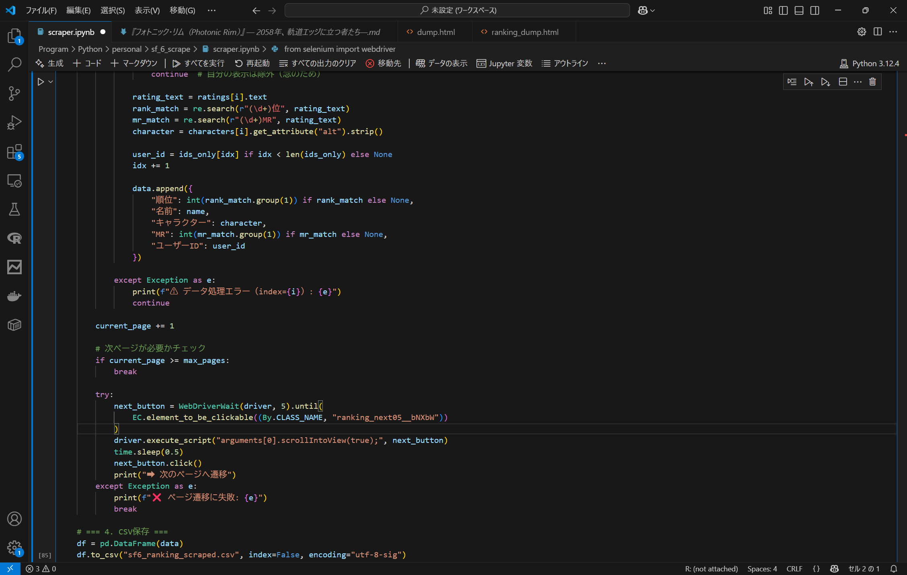
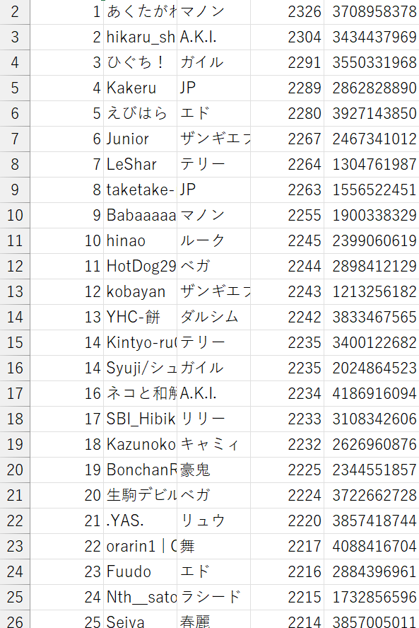

「ストリートファイター6」は2023年6月2日にカプコンから発売された、人気格闘ゲームシリーズの最新作。
キャラクターごとの技やコンボが異なり、どの技を、いつどのようにどういう意思で振るのか、という駆け引きが非常に重要。
ストリートファイターによる、ストリートファイターのための、総合アプリを作りたい。
Pythonを使い、スクレイピングを実施
→現在、上位750人のデータを取得済み
上位プレイヤーの行動パターンを統計的に分析
→プレイヤーの「強い行動」の共通点を抽出
スト6内のシステムで、リソースを使った割合や攻撃を受けた数が記録されている